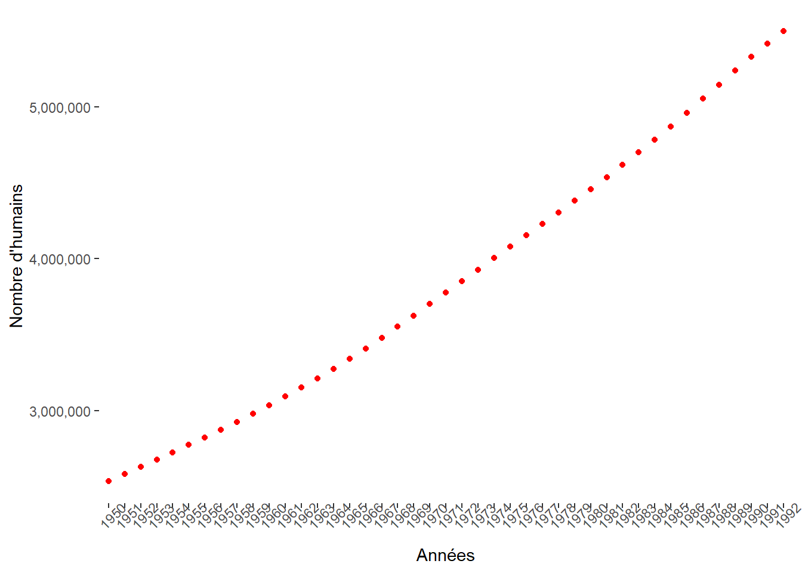
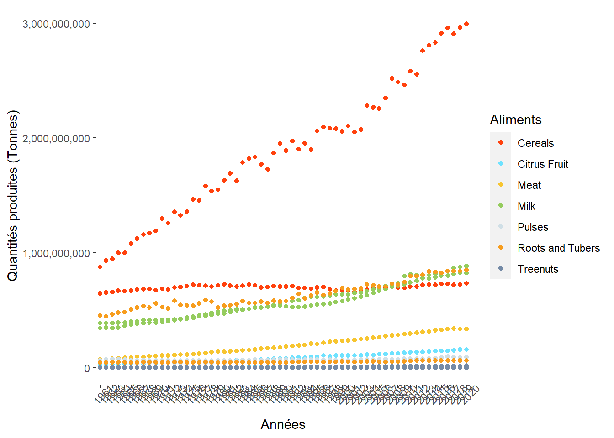
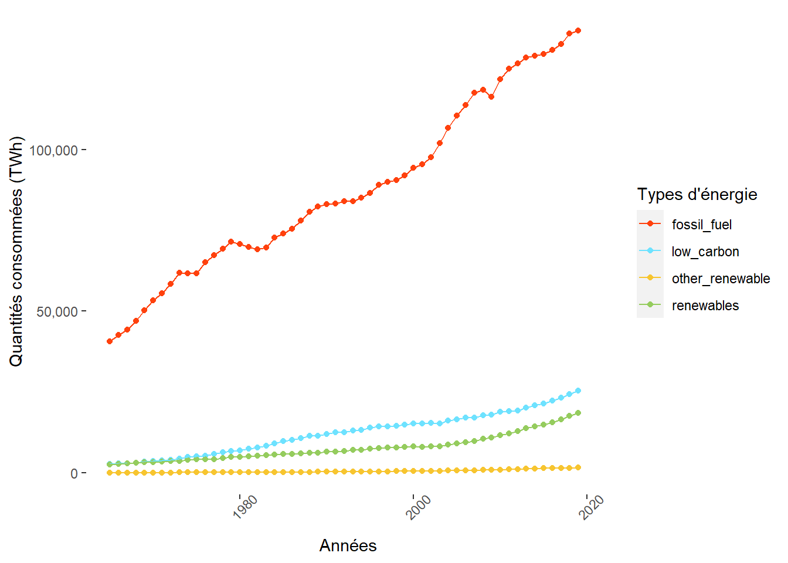
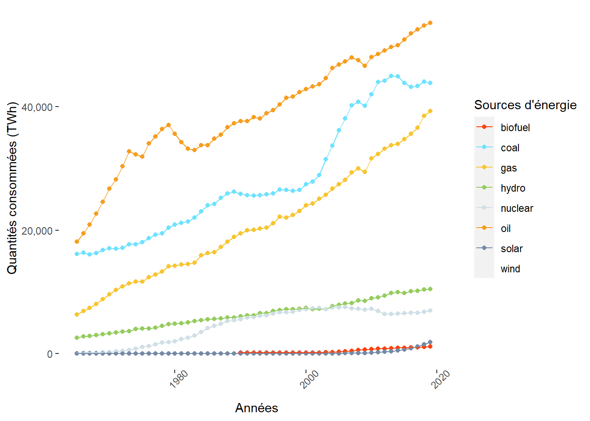

DATA ANALYSIS
1
Bienvenue !
1.1
Sujet de l’étude
1.1.1
Objectif
1.1.2
Données
1.1.3
Plan
1.2
Un bookdown en construction…
1.2.1
Futures modifications
1.2.2
Futurs ajouts
1.3
Retour sur l’exercice
2
Evolution des ressources mondiales
2.1
Evolution de la population mondiale de 1950 à 1992 (N=1)
2.2
Production alimentaire annuelle mondiale (Tonnes) de 1961 à 2020 (N=1)
2.3
Consommation annuelle mondiale des énergies (TWh) de 1965 à 2020 (N=1)
2.3.1
Par type d’énergie
2.3.2
Par source d’énergie
3
Evolution des ressources par continent
3.1
Evolution de la population régionale de 1950 à 1992
3.2
Production alimentaire annuelle régionale (tonnes) de 1961 à 2020
3.3
Consommation annuelle régionale des énergies (TWh) de 1965 à 2020
3.3.1
Par type d’énergie
3.3.2
Par source d’énergie
Published with bookdown
Evolution des ressources
Partie 2
Evolution des ressources mondiales
2.1
Evolution de la population mondiale de 1950 à 1992 (N=1)

2.2
Production alimentaire annuelle mondiale (Tonnes) de 1961 à 2020 (N=1)

2.3
Consommation annuelle mondiale des énergies (TWh) de 1965 à 2020 (N=1)
2.3.1
Par type d’énergie

2.3.2
Par source d’énergie
